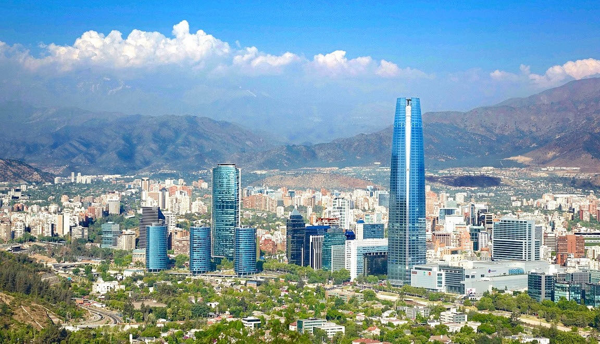
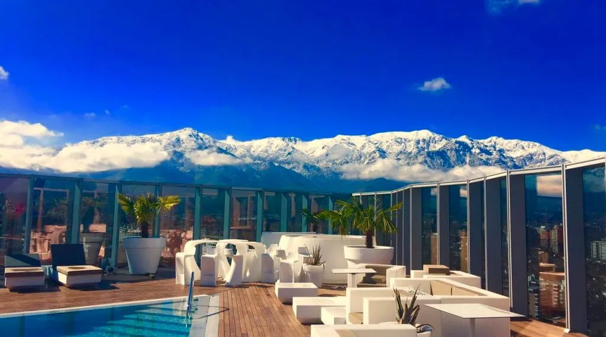
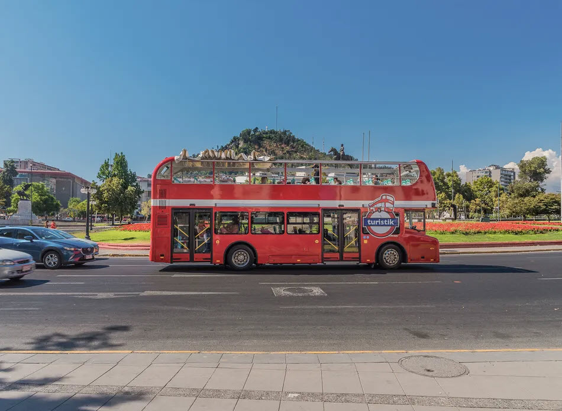
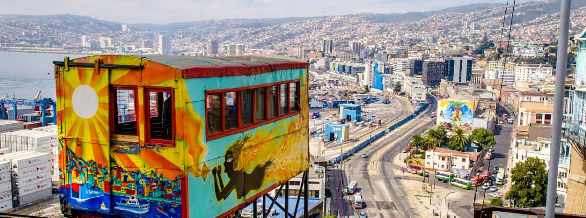
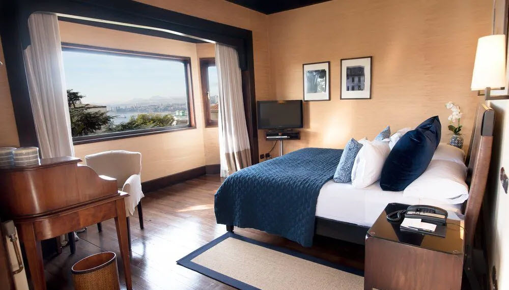
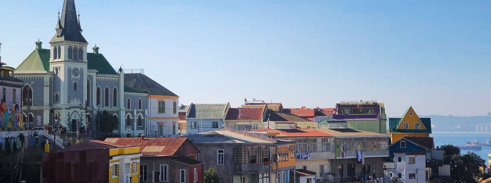
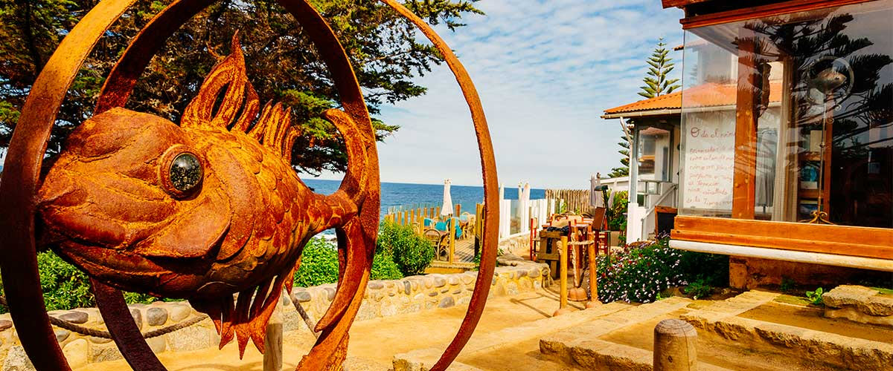

Vuelo: Buenos Aires - Santiago de Chile

Hotel Icon

El Icon Hotel está situado en Santiago, en la región de Las Condes, a sólo 10 minutos a pie del Parque Araucano. Ofrece un rooftop con piscina, bar y vistas a las Cordilleras, así como desayuno y atención 24h en la recepción.
Actividades:
City Tour - Bus turistico

Descripción general
Traslados ida y vuelta desde Hotel Icon en Santiago. Recorrido por los mejores lugares de la ciudad: Santiago centro, La Plaza de Armas, Santa Lucia, La Moneda (Palacio de Gobierno) y Barrio Bellavista. El tour cuenta con guía en Ingles/Español/Portugués.
City Tour Teleférico

Descripción general
Descubra el encanto y modernidad de Santiago de Chile desde el aire.
Vuelo: Córdoba - Viña del Mar

Hotel Casa Higueras

Hotel Casa Higueras es un cálido alojamiento tipo boutique, con instalaciones sofisticadas y atento servicio al huésped. Se encuentra ubicado en la ciudad portuaria de Valparaíso, con fácil acceso a diversos sitios de interés turístico y cultural.
Actividades:
Recorrido Ciudad Costera

Descripción general
Recorrido a lo largo de la costa central de Chile para visitar la playa paradisíaca de Viña del Mar y las calles históricas de uno de los puertos más importantes de Chile, Valparaíso.
Isla Negra

Descripción general
Isla Negra es uno de los sectores más encantadores de la costa central chilena, donde se encuentra una de las residencias del Nobel Pablo Neruda, ahora convertida en museo.